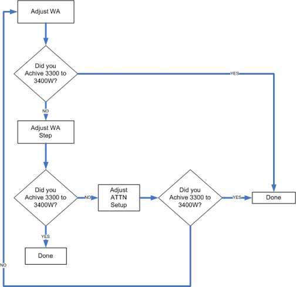

Operating Documentation
Direction 5440000, Rev# 5
Module Version 2.0, Version Date 9/23/09
Operating Documentation |
| ||||
| FATAL ELECTRIC SHOCK HAZARD! | ||||
| THE RF AMPLIFIER IS NOT DISABLED. | ||||
| TO PREVENT FATAL ELECTRIC SHOCK, ENSURE THE RF AMPLIFIER IS DISABLED WHILE CONFIGURING THE CALIBRATION TOOLS. |
| ||||
| Prevent coil and associated switch damage by removing all phantoms and hardware (for example, Head Coil, Surface Coil, etc.) from the magnet bore. | ||||
| ||||
| Do not operate the RF Amplifier with an improper load connected to its output. Doing so may permanently damage the Amplifier | ||||
To ensure that we correctly measure the true Output Power Level is correctly measured, the ampCalHead and ampCalBody values in the Mrconfig.cfg file must initially be set to zero (0).
Go to the Service Desktop and start the Service Browser if not already running.
Start the Config File Manager as shown in Illustration 1.
Go to the MR Config File tab and set the Head and Body Ampcal factors to 0 (zero) as shown in Illustration 2.
Reboot the system.
Verify that the system is Idle, and all coils are removed from the magnet bore.
Remove the front cover of the Systems Cabinet.
On the front of the Driver Module, disable T/R Error reporting by setting the TR switch to the Disable (default) position shown below.
Insert the 5000 W element into the Forward Sensor Port (blue, P/N 4300A374-6).
Make sure the arrow on the element points in the direction of the arrow (from Input to Output) on the Sensor.
Lock the element in place using the locking tab on the sensor as shown below.
Insert the 50 kW element into the Reflected Sensor Port (blue, P/N 4300A374-3).
Make sure the arrow on the element points in the opposite direction of the arrow on the Sensor.
Lock the element in place using the locking tab on the sensor. See Illustration 4.
| ||||
| ELECTRICAL RF BURN HAZARD! | ||||
| RF BURNS Can Occur AS A RESULT OF DISCONNECTING HELIAX CABLES WHILE THE SYSTEM IS SCANNING. | ||||
| PREVENT POSSIBLE RF BURNS WHEN DISCONNECTING HELIAX CABLES FROM J3 OR J4 ON THE RF AMPlifier BY VERIFYING THAT THE SYSTEM IS NOT MANUALLY PRESCANNING OR SCANNING. VERIFY THAT THE SCAN DESKTOP ICON DISPLAYS THE "IDLE" MESSAGE AND THE RF ENABLE SWITCH IS IN THE "OFF" position. |
Verify scanner is in Idle; turn Off the RF Enable at the Exciter (FP-I/O Board), or disconnect J14 (RF Drive Input) from the back of the RF Amplifier.
Disconnect the Head cable J3 (Head Output) from the back of the RF Amplifier.
To protect the Body Amplifier section, disconnect the Body cable J4 (Body Output) from the back of the RF Amplifier as well.
Connect the Input of the Coupler to J3 of the RF Amplifier as shown below.
Connect the RF Coupler output to the Dummy Load as shown below.
Connect one end of the Wattmeter cable to the Wattmeter sensor output, and connect the other end to the coupler. (RS232 is not used.)
| ||||
| Do not apply RF power to the Dummy Load without the fan operating. Doing so will result in catastrophic damage to the Dummy Load. | ||||
Make sure to plug the fan for the Dummy Load into a service outlet in the Systems Cabinet.
Reconnect J14 on the back of the RF Amplifier, or switch RF Enable to On.
For more information on the Wattmeter, refer to Wattmeter (2372868) Introduction.
Press the On button on the Wattmeter. (If the coupler and sensor are not correctly attached to the Amplifier, a No Sensor message will display.)
Select the arrow up  button under Scale.
button under Scale.
Type: 5000 to set the range, and press <Enter>.
Check the setting, by selecting the arrow up button under Scale again.
Press <Enter> to exit this mode.
Select the arrow up button under Fwd Units, and make sure the scale
reads W (or kW on some
Wattmeters).
If the scale reads dBm, select the arrow
up button under Fwd Units again to toggle the scale to read W (Watts)
or kW (kilowatts) on the Top, Forward Power
Scale.
Ignore the Bottom, Reflected Power Scale value. It is not used during Maximum Power Calibration.
Press <Shift>, and select the arrow up button under Setup.
Verify that it reads 43.
If not, type: 43 and press <Enter>. (Illustration 7 shows what should display at this time.
Press <Enter>, select the arrow up  button under Type, and change the unit of measure
to Peak.
button under Type, and change the unit of measure
to Peak.
Some kits require an offset to ensure accurate measurement. Locate the Element Offset Factors Card in the kit and view the offset for 3T e2 Head Output. (See Illustration 8.)
If an offset exists, press the [Offset] button on the Wattmeter.
Enter the value that was displayed on the Offset Card from the kit.
Press <Enter>. (Illustration 9 shows what should display at this time).
Disable the UTNS. For systems with a UTNS3, refer to Stopping and Starting UTNS3..
| ||||
| Prevent coil and associated switch damage by removing all phantoms and hardware (for example, Head Coil, Surface Coil, etc.) from the magnet bore. | ||||
Prepare the system to scan in Head mode:
Click [New Pt].
Id: geservice and press <Enter>.
Name: apb cal Head and press <Enter>.
Weight (Lb): 300 and press <Enter>.
Set Patient Protocols to Service.
Select [Other], scroll through the protocol list and select 3.0T apb cal.
Select Series 2, Head and click [Accept].
Set Landmark and select [Save Series].
Right-click on [Research Options] and select Setup Params.
Set TG to 180 and click [Done].
Right-click on [Research Options] and select Display CVs from the drop-down menu.
Set the value of CV calmode to 5 (Dual Logamp Waveform.
Press <Enter> to save the setting.
Click [Accept].
Right click on [Research Options] and select Download.
Remove the keypad access cover from the RF Amplifier, located on the front of the amplifier near the display shown below.
This section explains how to adjust the Solid State Amplifier gain of the Solid State pre-amplifier (VVA Setup) and, if necessary, adjust the Attenuation of the IPA stage (ATTN Setup), the Gain (WA-Variable Voltage Adjustment) of the solid-state amplifier when it is first set up to maximize its output. The Attenuation of the IPA stage can also be adjusted to fine tune the final value as close as possible to 3,000 W (3,300 to 3,400 Watts). VVA Setup and ATTN Setup interact with each other, so it may be necessary to go back and forth between these adjustments until the amplifier is properly calibrated. Illustration 11 shows the process flow.
Illustration 11: Process Flow

Select [Manual Prescan] and [Scan TR].
Set the Transmit Gain to 180.
Make sure everything is functioning normally and a reading displays on the Wattmeter.
Allow the scanner to pulse at TG 180 for 6 minutes. (This is due to the drop in gain that occurs over the 6-minute period.)
Slowly increase the TG to 200. (If the amplifier trips, set the TG to its highest setting achievable without tripping.)
| ||||
| Press only the buttons required in this procedure. Avoid pressing the Mode button. It controls the Output Drive of the Solid State Amplifier, switching from the Body to Head mode of operation. See Keyboard Operation / Description of IPA and PA Stages. | ||||
While the system is pulsing RF, press the <Menu> button on the keypad located inside the RF Amplifier (Illustration 12) until the LCD display on the front of the Amplifier reads:
Press the down arrow and select VVA SETUP and press <Enter>. The following displays:
Continue to press <Enter> until the desired step size is selected. For smaller and finer calibration, use smaller incremental step sizes such as 1 or 10. (Step size values can be set to 1, 10, 20, 30, 40, 50, 60, 70, 80, 90 or 100).
Once the Step Size is selected, press the down or up arrow to adjust the Gain:
Using the down and up arrows, resume the adjustment of the gain until 3,300 W (approximately 3,300 to 3,400 Watts) is achieved on the meter.
If unable to achieve 3,300 Watts on the meter display, press the <Menu> button until the keypad resets to its original state. The LCD display will look similar to the illustration bellow:
If still unable to achieve the proper maximum Wattage setting, adjust the IPA Stage Attenuation, refer to Adjusting ATTN SETUP (PA Attenuation) and repeat VVA Setup (Solid State Amplifier Gain Adjustment).
Proceed to Step Saving New Calibration Settings.
This section only needs to be performed if you can’t achieve 3300 Watts (Approx. 3300-3400 Watts) with VVA SETUP. (Note: At this time the RF amplifier is still pulsing at TG of 200)
Press the <Menu> Button until the LCD Display on the front of the amplifier reads the following:
Select <Enter>.
Press the Down or Up arrows while watching the Wattmeter to adjust the attenuation of the RF amplifier PA stage. Slowly attenuate the RF power to as close to 3300 Watts as you can. If you cannot achieve 3300 Watts, adjust the attenuation to a value that is below 3300 Watts.
Press the <Menu> button to exit.
Press the <Menu> button again to return the LCD Display to its original setting shown below.
Stop [Manual Prescan]. (The RF Amplifier should still be producing RF at a TG of 200.)
Look at the LCD display on the front of the Amplifier. It should read 3300 ± approximately 600 Watts. (This will vary site to site and can be used as a confidence indicator for the actual setting.)
Press the <Menu> button multiple times until the original screen on the Amplifier LCD redisplays.
Press the Off button. This will STORE the value in NVRAM.
Wait 30 seconds and press the [Operate] or [Stanby] button.
Wait another 30 seconds for the Amplifier to react to the new settings.
Reduce the TG to 0 (zero) once the RF Output is calibrated to specification.
Test the new Maximum Power value by restarting [Manual Prescan].
Select [Scan TR].
Slowly increase the TG to 200. (The system should not trip.)
Take a final look at the Wattmeter display, making sure the desired value displays.
Reduce TG to 0 (zero).
Stop [Manual Presecan]
Continue with Finalization.
| ||||
| ELECTRICAL/RF BURN HAZARD! | ||||
| RF BURNS CAN OCCUR AS A RESULT OF DISCONNECTING HELIAX CABLES WHILE THE SYSTEM IS SCANNING. | ||||
| PREVENT POSSIBLE RF BURNS WHEN DISCONNECTING HELIAX CABLES FROM J3 OR J4 ON THE RF AMPlifier BY VERIFYING THAT THE SYSTEM IS NOT MANUALLY PRESCANNING OR SCANNING. VERIFY THAT THE SCAN DESKTOP ICON DISPLAYS THE "IDLE" MESSAGE AND THE RF ENABLE SWITCH IS IN THE "OFF" POSITION |
| ||||
| Do not turn connect/disconnect the Wattmeter Sensor while the meter is On. Always turn the meter Off prior to plugging/unplugging Sensor. | ||||
Verify scanner is in Idle; turn Off the RF Enable and disconnect J14 from the back of the RF Amplifier.
Disconnect the RF Wattmeter Sensor from the J3 Head Output connection.
Connect the original Head Output Cable to J3 of the RF Amplifier, and connect the Body Output Cable to J4 of the RF Amplifier.
Re-enable RF and connect J14 on the RF Amplifier.
Perform a [Reset TPS] to ensure the RF Amplifier is in a known state to the system.
Perform (Universal Power Monitor - Head Setup and Calibration) to ensure the UPM is properly calibrated and functioning.